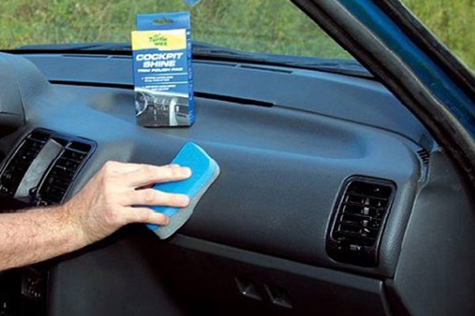

Полировка пластика
На рассеивателях фар, молдингах, ручках дверей и остальных пластиковых элементах автомобиля со временем возникают мелкие повреждения — потертости и царапины, являющиеся неизбежным следствием активной эксплуатации. Все это портит и дизайн машины, и настроение ее владельца. Вернуть пластику изначальный вид просто — достаточно его отполировать.
Полировка пластика автомобиля может представлять собой как поверхностную очистку и обработку специальными средствами, так и более тщательное абразивное полирование. Первый способ эффективен для пластиковых деталей салона:
торпедо;
консоли управления;
подлокотников;
решеток динамиков;
дверных панелей.
На них пластик обычно тускнеет в результате скопления пыли и загрязнений в его порах, что происходит даже при хорошем уходе за. Профессиональные средства для обработки удалят грязь из микропор и вернут пластику насыщенный цвет. После очищения все элементы доводятся до блеска ручной полировкой. Если осуществлять такую процедуру регулярно, пластик в салоне надолго сохранит приятный вид и будет защищен от выгорания.

Больше времени уйдет, чтобы отполировать пластиковые элементы, находящиеся снаружи. Их основная проблема — царапины, при том достаточно глубокие. Но удалять их агрессивными пастами опасно — пластик может перегреться, поэтому применяют щадящие абразивы и наждачную бумагу разной зернистости. Сперва используются более грубые вещества, а совершенный вид детали принимают после полировки финишной пастой. Самые мелкие детали кузова вновь станут гладкими и блестящими. По такому принципу полируются царапины на рассеивателях фар, молдингах и пластиковых бамперах.
С пластиковыми элементами нужно обращаться очень осторожно, так как применение неподходящего оборудования может изрядно навредить их структуре, а неаккуратность приведет к поломкам. Самостоятельно пластик полировать не стоит. Доверить работу лучше мастерам, больших расходов эта процедура не потребует.
Также рекомендуем
Наномойка Антидождь Инновационный автошампунь Полировка «Жидкое стекло»